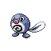

Назад
Поливаг
Поливаг — Покемон 1 поколения под номером 60 в Покедекс. Обитает он в регионе Канто и относится к Водяному типу. У Поливага очень тонкая кожа, сквозь которую можно увидеть спиральные внутренности этого Покемона. В тоже самое время, его кожа очень гибкая, и её не способны прокусить даже самые острые клыки.
Тип:
Водяной
Эволюция

# 060 Поливаг
=>
# 061 Поливирл